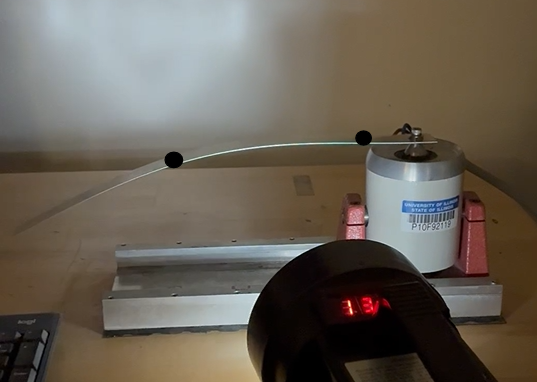
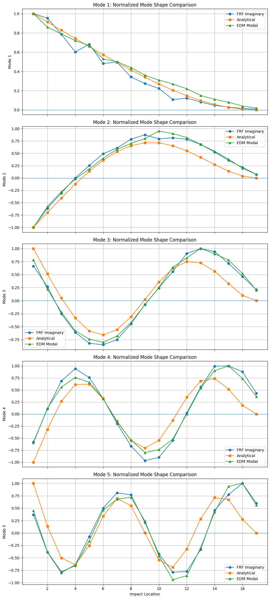

10 / Experimental modal analysis / Completed laboratory study
AE461 · Four-person laboratory team
Identifying cantilever modes with shaker and impact-hammer tests
A frequency-response peak becomes useful when it can be connected to a physical vibration mode. Our team first observed an aluminum cantilever under shaker excitation, then used a roving impact hammer and a tip accelerometer on a steel cantilever to identify five resonances and reconstruct their mode shapes. Comparing manual FRF interpretation with EDM Modal provided a consistency check on the identification process.
- Team contribution
- Coauthored the vibration-testing and modal-analysis report
- Tools
- Modal analysis · Impact hammer · Frequency response · EDM Modal
- Outcome
- Identified five impact-test modes; manual and EDM frequencies differed by less than 0.4%

Use motion to interpret the measurements
The shaker test applied harmonic base excitation to an aluminum cantilever. A stroboscope made the motion appear stationary so that the team could observe nodes and the increasing complexity of successive bending modes.
For the impact test, a steel cantilever was fixed to a heavy support block. Keeping the tip accelerometer in one location while moving the hammer through 17 excitation locations gave a spatial set of input–response measurements without relocating the response sensor.
Identify resonances without misreading the FRF
The signal analyzer and EDM Modal produced complex frequency response functions (FRFs). The team identified resonances using magnitude peaks and imaginary-component extrema, with real-component and phase behavior as supporting evidence.
Two interpretation details mattered: an imaginary response could be a positive peak or a negative trough depending on mode and impact location, and phase jumps between +180° and −180° represented wrapping rather than a data error. Considering multiple components and locations reduced dependence on a single plotted feature.
Reconstruct and cross-check five modes
Impact-test resonances: 24.0, 154.5, 428.2, 840.4, and 1383.4 Hz.
The imaginary amplitudes at each resonance were extracted across the 17 locations and normalized to estimate the mode shapes. The experimental shapes followed the analytical and EDM trends most closely at lower modes; higher modes showed more visible differences.
Manual FRF frequencies differed from EDM Modal by 0.29%, 0.39%, 0.20%, 0.25%, and 0.22%. This checks two ways of interpreting the measured response. The shaker portion had a separate 2.41% average difference from its prelab frequency estimates; it is not the same comparison.


Outcome and engineering judgment
The experiment met its objective of identifying natural frequencies and mode shapes. The report discusses finite frequency resolution, damping, measurement noise, and the effect of the tip accelerometer’s mass: the measured system was the instrumented beam, not an ideal unloaded beam.
I am a coauthor of the team report. Its measurement-to-interpretation sequence provides evidence of experimental dynamics and physically grounded signal analysis; the source does not establish which member collected or processed particular FRFs.